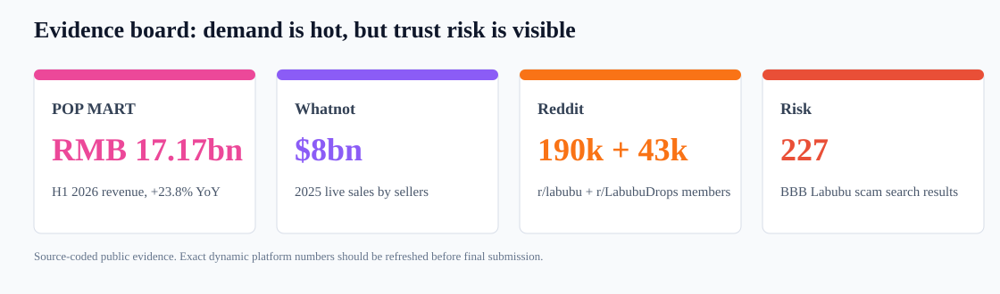
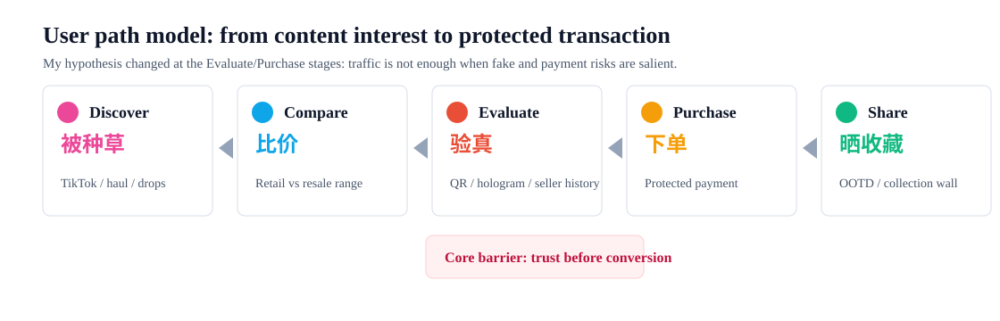
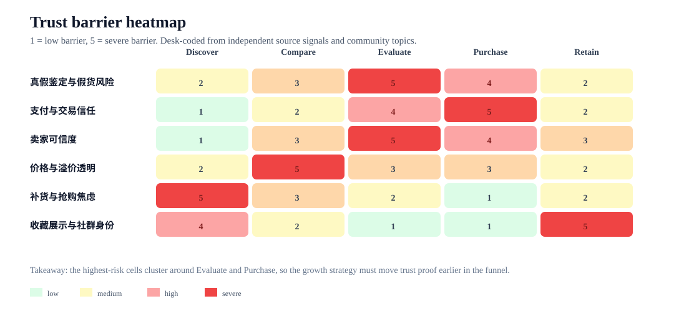
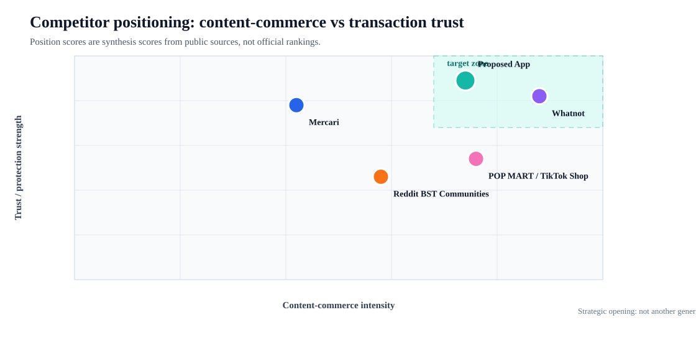
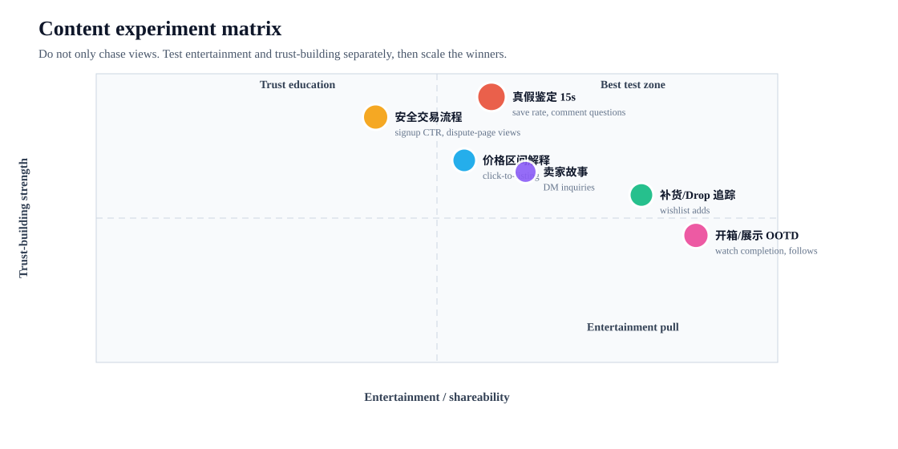
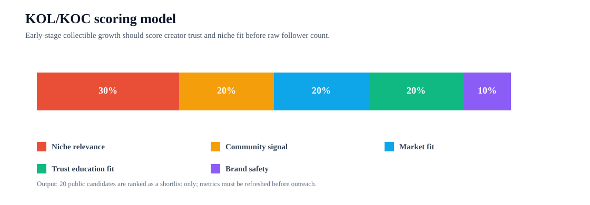
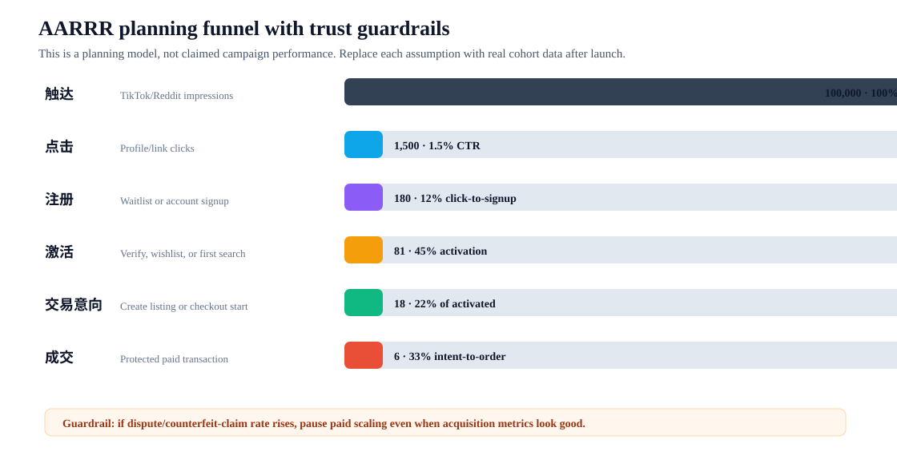

Whatnot
模式：直播拍卖 + 强交易保护
优势：Live social commerce and trust infrastructure
缺口：Less suitable for slow browsing and collection management
这个项目以海外 C2C 潮玩二手交易 App 为研究对象，展示从市场判断、用户路径、竞品机制、内容实验到指标复盘的完整增长策略。

用财报和平台报告证明海外潮玩与直播交易有足够需求基础。
用户已经在讨论展示、买卖、补货、真假判断和交易问题。
假货与诈骗信号说明信任不是附加项，而是转化前提。
增长 = TikTok 曝光 + KOL 开箱 + 裂变活动。这个想法可以带来流量，但解释不了用户为什么愿意把钱交给一个新的 C2C 平台。
公开证据显示，成熟平台都在强调 buyer protection、authentication、shipping protection；社区也在讨论 payment、real or fake、buy/sell/trade。所以核心问题不是兴趣，而是信任。

我把来源证据按痛点编码，再放到用户路径里。热力图的意义是：不是所有痛点都同等重要，增长动作要优先解决高风险阶段。


模式：直播拍卖 + 强交易保护
优势：Live social commerce and trust infrastructure
缺口：Less suitable for slow browsing and collection management
模式：横向 C2C 二手交易
优势：Simple listing, protection policy, broad supply
缺口：Community identity and toy-specific authenticity are weaker
模式：官方新品 + 内容电商
优势：Brand heat, official supply, TikTok discovery
缺口：Limited secondhand liquidity and collector-to-collector trust
模式：兴趣社区内交易意向
优势：Authentic user discussions and high-intent topics
缺口：No native escrow, verification, or standard dispute process
模式：可信 C2C + 收藏社区
优势：Combine authenticity proof, protected transaction, and UGC
缺口：Needs early supply and community trust seeding

做 4 条内容支柱：真假鉴定、安全交易流程、价格解释、开箱/展示。每条只测一个核心信息点，避免只追播放量。
先做社区倾听和实用内容：weekly real-or-fake thread、price check、buyer safety guide、collector AMA。这里的目标是建立可信度，不是硬广。

| # | 候选 | 定位 | 评分 | 首轮测试 |
|---|---|---|---|---|
| 1 | @bigintojay | collector educator / hub | 94 | Lead authenticity Q&A + creator hub intro |
| 2 | @idontfeedbirdz | knowledge creator | 90 | Fake-vs-real duet/stitch test |
| 3 | @pinemiddleschool | knowledge creator | 80 | Price guide and collection-care post |
| 4 | @ClickNAutomation | knowledge creator | 74 | Automation/restock alert angle |
| 5 | @thearcadecyclist | collector/lifestyle | 76 | Collection story + listing CTA |
| 6 | @lat3esh | knowledge creator | 76 | Beginner buying checklist |
| 7 | @beautybyredd | lifestyle collector | 76 | OOTD + safe-buy caption |
| 8 | @azgirlmom | family/lifestyle collector | 76 | Gift-buying safety checklist |
| 9 | @ARMAN | collector community | 64 | Collection showcase test |
| 10 | @dbagel | collector community | 66 | UGC challenge seed |
这不是已合作名单，而是候选池。正式 outreach 前必须刷新粉丝地域、近 30 天播放、互动质量、报价和品牌安全。

| 层级 | 指标 | 中文口径 | 为什么看它 |
|---|---|---|---|
| North-star | Protected transaction completed | 受保护成交数 | Final behavior that proves both demand and trust |
| Acquisition | CTR from TikTok/Reddit | 点击率 | Separates creative interest from real intent |
| Activation | Verified first action rate | 完成首次搜索/收藏/认证率 | Shows whether users understand the product value |
| Trust | Authentication-complete rate | 认证资料完成率 | Measures trust feature adoption before purchase |
| Conversion | Checkout start to paid order | 结账到支付转化 | Finds pricing/shipping/payment friction |
| Quality | Dispute rate / counterfeit claim rate | 纠纷率/假货申诉率 | Guardrail: growth cannot trade off with trust |
| Retention | D7 return and wishlist revisit | 7日回访/愿望单回访 | Signals collection habit formation |
| Creator | Cost per activated user by creator | 创作者激活用户成本 | Evaluates KOL/KOC beyond views |
一句话策略：把「我想买」变成「我敢买」，再用内容和社群把高信任交易体验扩散出去。
| ID | 类型 | 来源 | 关键数据 | 项目用途 |
|---|---|---|---|---|
| S01 | market | POP MART H1 2026 results | RMB 17.17bn, +23.8% YoY | Proves global collectible demand is not a niche assumption. |
| S02 | market | Whatnot 2026 State of Live Selling | $22bn market; Whatnot nearly 60% share; sellers drove $8bn live sales in 2025 | Supports social-commerce mechanics for collectibles. |
| S03 | trust | Whatnot Trust Center | About one in three employees works in Trust and Safety | Shows trust is a core operating layer, not a back-office feature. |
| S04 | trust | Whatnot Buyer Protection Policy | Covers counterfeit/fake, not-as-described, damaged/lost, and non-delivery cases | Benchmark for trust promises in a C2C collectibles marketplace. |
| S05 | monetization | Whatnot seller fees | 8% commission up to $1,500 plus 2.9% + $0.30 payment processing | Benchmark for seller-side marketplace economics. |
| S06 | trust | Mercari Seller Protection | Free listing; 10% selling fee; up to $200 shipping protection | Benchmark for listing flow, protected payment, and shipping guardrails. |
| S07 | monetization | Mercari fees | Buyer protection fee 3.6%; seller fee 10% | Frames marketplace fee transparency as a conversion factor. |
| S08 | trust | Mercari Authenticate | Real Authentication evaluates item photos and responds within 48 hours | Benchmark for authenticity proof workflow. |
| S09 | community | GummySearch r/labubu | 190k members; top flairs include Display/OOTD/Collection, Customization, Haul, Discussion | Evidence that identity/community content creates sustained interest. |
| S10 | community | GummySearch r/LabubuDrops | 43k members; BUY/SELL/TRADE flair count 173; Payment topic count 100 | Shows users discuss buying, selling, payment, stock, and real/fake checks. |
| S11 | risk | U.S. CPSC Labubu fake warning | Warns fake Labubu toys may pose choking hazards; gives QR, hologram, UV stamp checks | Turns authenticity from a preference into a safety/trust requirement. |
| S12 | risk | BBB Scam Tracker Labubu search | 227 search results for Labubu-related scam reports | Validates fake/no-delivery fears in public complaint data. |
| S13 | commerce | TikTok Shop POPMART search page | POPMART US SHOP 4.8 rating, 2.6M sold, 862.1k+ followers | Supports TikTok as a discovery-to-commerce channel. |
| S14 | creator | Sprout Social 2026 Influencer Marketing Report | Follower count is less reliable than content relevance and audience fit | Supports using a weighted KOC/KOL score instead of follower-count sorting. |
| S15 | creator | CreatorIQ Creator-Powered Funnel Report | Creator content is used across paid media; report cites CTR/conversion/CPM advantages | Supports reusing KOC content as paid creatives after organic validation. |
| S16 | creator | TikTok creator commercial content quality standard | Best practices emphasize real usage, genuine feelings, product value, and early hook | Turns TikTok content plan into a testable creative brief. |
| S17 | verification | LabubuCollector About | Collector site studies authentic and fake dolls side by side | Supports authenticity education as a content/product feature. |
| S18 | resale | Modern Retail Labubunomics | Article reports StockX verifies boxes using QR-code checks and monitors fakes | Supports building verification into the resale flow. |
| S19 | kol | BigIntoJay Linktree | Public list of Labubu-related creators and community accounts | Seed source for the 20-candidate KOL/KOC shortlist. |